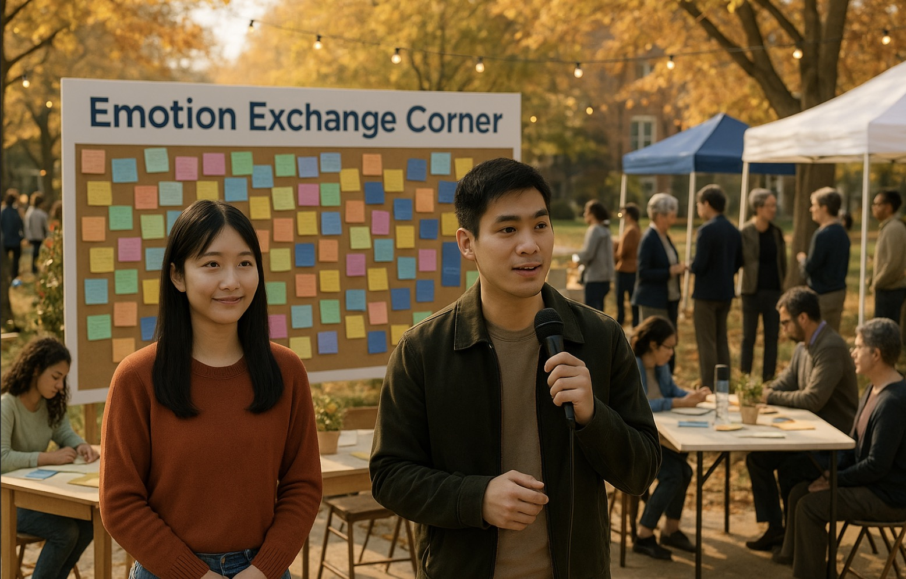

Jack accepts Rose’s invitation. Together, they co-host a new open dialogue event encouraging diverse
emotional expression. More students join in, and even faculty members begin to support the initiative. The
message wall evolves into a permanent “Emotion Exchange Corner.” The system is reshaped into a participatory
model.